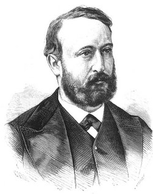

| Información personal | ||
|---|---|---|
|  | Nacimiento: | 9 de abril de 1828, Gerona (España) |
| Fallecimiento: | 5 de mayo de 1881, Madrid (España) (53 años) | |
| Nacionalidad: | Española | |
| Información profesional | ||
| Ocupación: | Pintor | |
| Cargos ocupados: | Director del Museo del Prado | |
Nacido en la ciudad catalana de Gerona en 1828, desde muy joven comenzó a tomar clases de pintura. Se formó en la Escuela de la Lonja de Barcelona (1850-1855). En 1856 se trasladó a París donde amplió sus estudios y dos años más tarde ganó una medalla en Roma por un retrato de Martín Lutero. Especialista en pintura de historia, destacó con su cuadro Episodio de Trafalgar (1862).
En 1865 regresó a España y por encargo de la Diputación de Barcelona retrató a Juan Prim en el cuadro "El general Prim en la guerra de África" (1865). Más tarde evolucionó hacia el realismo, y en 1881 retrató para la Universidad de Barcelona a Alfonso XII con el hábito del Toisón de Oro. Decoró los teatros Real, Apolo y de la Zarzuela de Madrid y el Alcázar de Toledo.
Al ser derrocada Isabel II, Sans se trasladó a Gerona. Al fracasar la Primera República, el hijo de Isabel II, Alfonso, es proclamado rey como Alfonso XII. En 1873 se nombró a Sans director del Museo del Prado, donde se dedicó a restaurar obras antiguas. Durante su mandato, el museo recibió las Pinturas negras de Goya, restauradas por Salvador Martínez Cubells. Desde 1875 fue académico de la Real Academia de Bellas Artes de San Fernando. Falleció en Madrid en 1881.